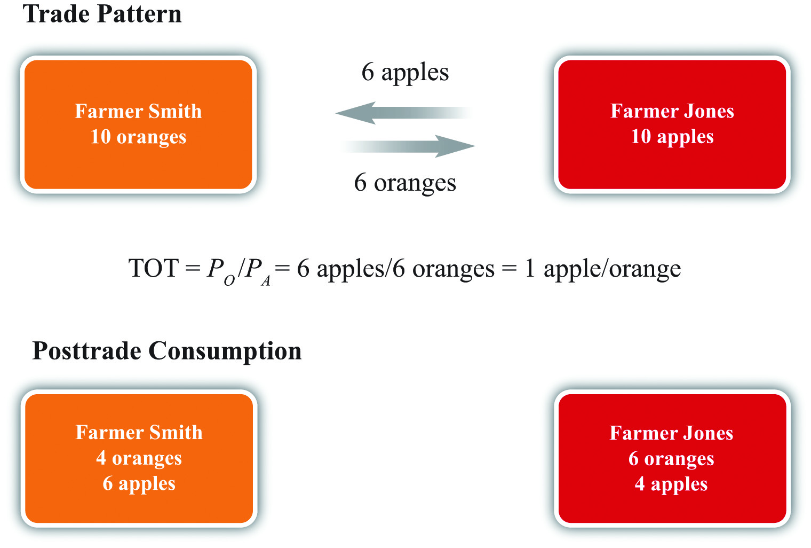

The pure exchange model is one of the most basic models of trade and is even simpler than the Ricardian model in Chapter 2. The model develops a simple story: What if one person who possesses one type of good (say apples) meets up with another person who possesses another type of good (say oranges)? What could we say about two people trading apples for oranges?
As it turns out, we can say quite a bit. The pure exchange model demonstrates the advantages of mutually voluntary exchange. And when the simple story is extended to include a second apple seller, the model shows the positive and negative effects associated with competition. When the competition is from another country, the model demonstrates how international trade can generate both winners and losers in the economy. This chapter offers the first example showing that trade can cause a redistribution of income, with some winning from trade and others losing from trade.
The Ricardian model shows that trade can be advantageous for countries. If we inquire deeper and ask what is meant when we say a “country” benefits in this model, we learn it means that every individual, every worker, in both countries is able to consume more goods after specialization and trade. In other words, everyone benefits from trade in the Ricardian model. Everybody wins.
Unfortunately, though, this outcome is dependent on the assumptions made in the model, and in some important ways these assumptions are extreme simplifications. One critical assumption is that the workers in each country are identical; another is the free and costless ability of workers to move from one industry to another. If we relax or change these assumptions, the win-win results may not remain. That’s what we will show in the pure exchange model and the immobile factor model.
For a variety of reasons, it is more common for trade to generate both winners and losers instead of all winners. Economists generally refer to a result in which there are both winners and losers as income redistributionOccurs when some individuals gain income while others lose or when individuals gain and lose income shares of total income. because the winners can be characterized as receiving a higher real income, while those who lose suffer from a lower real income.
The simplest example of advantageous trade arising from differences in resource endowments can be shown with a pure exchange model. In this model, we ignore the production process and assume more simply that individuals are endowed with a stock of consumption goods. We also show that trade can result in a redistribution of income. The model and story are adapted from a presentation by James Buchanan about the benefits of international trade.James Buchanan, “The Simple Logic of Free Trade,” Proceedings of the First Annual Symposium of the Institute for International Competitiveness (Radford, VA: Radford University, 1988), iii–x.
Suppose there are two individuals: Farmer Smith and Farmer Jones. Farmer Smith lives in an orange grove, while Farmer Jones lives in an apple orchard. For years, these two farmers have sustained themselves and their families by collecting oranges and apples on their properties: Smith eats only oranges and Jones eats only apples.
One day these two farmers go out for a walk. Farmer Smith carries ten oranges with him in case he becomes hungry. Farmer Jones carries ten apples. Suppose these farmers meet. After a short conversation, they discover that the other farmer sustains his family with a different product, and the farmers begin to discuss the possibility of a trade.
The farmers consider trade for the simple reason that each prefers to consume a variety of goods. We can probably imagine the monotony of having to eat only apples or only oranges day after day. We can also probably imagine that having both apples and oranges would be better, although we might also prefer some fried chicken, mashed potatoes, a Caesar salad, and numerous other favorite foods, but that is not included as a choice for these farmers. As such, when we imagine trade taking place, we are also assuming that each farmer has a preference for variety in consumption. In some special cases, this assumption may not be true. For example, Farmer Jones might have a distaste for oranges, or he may be allergic to them. In that special case, trade would not occur.
Assuming trade is considered by the farmers, one question worth asking is, What factors will determine the terms of tradeThe amount of one good traded per unit of another in a mutually voluntary exchange. Often expressed as a ratio of prices.? The terms of trade is defined as the quantity of one good that exchanges for a quantity of another. In this case, how many apples can be exchanged for how many oranges? It is typical to express the terms of trade as a ratio. Thus, if one apple can be exchanged for four oranges, we can write the terms of trade as follows:
where TOT refers to terms of trade. It is immaterial whether the ratio is written apples over oranges or oranges over apples, but to proceed, one or the other must be chosen.
The terms of trade is also equivalent to the ratio of prices between two goods. Suppose PA is the price of apples (measured in dollars per apple) and PO is the price of oranges (measured in dollars per orange). Then
To demonstrate the equivalency, consider the units of this price ratio shown in brackets above. After some manipulation, we can see that the dollars cancel and thus the price of oranges over the price of apples is measured in units of apples per orange. We can refer to this price ratio as the price of oranges in terms of apples—that is, how many apples one can get in exchange for every orange. Notice that the price of oranges over apples is in units of apples per orange. Similarly, PA/PO has units of oranges per apple.This model and many others we will consider are actually barter economies. This means that no money is being exchanged between the agents. Instead, one good is exchanged for another good. However, since we are accustomed to evaluating values in monetary terms, we will often write important expressions, like the terms of trade, in terms of their monetary equivalents as we have done here.
The terms of trade ultimately decided on by the two trading farmers will depend on a variety of different and distinct factors. Next we describe many of these factors.
The strength of each farmer’s desire for the other product will influence how much he is willing to give up to obtain the other product. Economists assume that most products exhibit diminishing marginal utility. This means that the tenth orange consumed by Farmer Smith adds less utility than the first orange he consumes. In effect, we expect people to get tired of eating too many oranges. Since for most people the tenth orange consumed will be worth less than the first apple consumed, Farmer Smith would be willing to trade at least one orange for one apple. As long as the same assumption holds for Farmer Jones, the tenth apple for him will be worth less than the first orange, and he will be willing to trade at least one for one. How many more oranges might trade for how many more apples will depend on how much utility each farmer gets from successive units of both products: in other words, it depends on the farmers’ preferences.
In this situation, each farmer is unlikely to have well-defined preferences. Farmer Smith may never have tasted an apple, and Farmer Jones may never have tasted an orange. One simple way to resolve this uncertainty is for the farmers to offer free samples of their products before an exchange is agreed on. Without a sample, the farmers would have to base their exchanges on their expectations of how they will enjoy the other product. Free samples, on the other hand, can be risky. Suppose a sample of oranges is provided and Farmer Jones learns that he hates the taste of oranges. He might decide not to trade at all.
To overcome uncertainty in individual preferences, many consumer products are offered in sample sizes to help some consumers recognize that they do have a preference for the product. This is why many supermarkets offer free samples in their aisles and why drink companies sometimes give away free bottles of their products.
The relative quantities of the two goods available for trade will affect the terms of trade. If Farmer Smith came to the market with one hundred oranges to Farmer Jones’s ten apples, then the terms of trade would likely be different than if the farmers came to the market with an equal number. Similarly, if the farmers came to the market with ten oranges and ten apples, respectively, but recognized that they had an entire orchard of apples and an entire grove of oranges waiting back at home, then the farmers would be more likely to give up a larger amount of their product in exchange.
The sizes of the apples and oranges are likely to influence the terms of trade. One would certainly expect that Farmer Smith would get more apples for each orange if the oranges were the size of grapefruits and the apples the size of golf balls than if the reverse were true.
The quality of the fruits will influence the terms of trade. Suppose the apples are sweet and the oranges are sour. Suppose the apples are filled with worm holes. Suppose the oranges are green rather than orange. Or consider the vitamin, mineral, and calorie contents of each of the fruits. Quality could also be assessed by the variety of uses for each product. For example, apples can be eaten raw, turned into applesauce, squeezed into juice, made into pies, or covered with caramel.
Although a pure exchange model assumes that no production takes place, imagine momentarily that some effort is required to harvest the fruit. What if apples grew at the top of tall trees that required a precarious climb? What if predatory wolves lived in the orange grove? Surely these farmers would want to take these factors into account when deciding the terms for exchange. Of course, this factor is related to scarcity. The more difficult it is to produce something, the scarcer that item will be.
The art of persuasion can play an important role in determining the terms of trade. Each farmer has an incentive to embellish the quality and goodness of his product and perhaps diminish the perception of quality of the other product. Farmer Smith might emphasize the high quantities of vitamin C found in oranges while noting that apples are relatively vitamin deficient. He might argue that oranges are consumed by beautiful movie stars who drive fast cars, while apples are the food of peasants. He might also underemphasize his own desire for apples. The more persuasive Farmer Smith is, the more likely he is to get a better deal in exchange. Note that the farmer’s statements need not be truthful as long as the other farmer is uncertain about the quality of the other product. In this case, differences in the persuasive abilities of the two farmers can affect the final terms of trade.
Decisions about how much to trade are based on the utility one expects to obtain upon consuming the good. The utility one ultimately receives may be less. Indeed, in some cases the value of what one receives may be less than the value of what one gives up. However, this outcome will arise only if expectations are not realized.
For example, a person may choose to voluntarily pay $10 to see a movie that has just been released. Perhaps the person has read some reviews of the movie or has heard from friends that the movie is very good. Based on prior evaluation, the person decides that the movie is worth at least $10. However, suppose this person winds up hating the movie and feels like it was a complete waste of time. In hindsight, with perfect knowledge about his own preferences for the movie, he might believe it is only worth $5 or maybe just $2, in which case he is clearly worse off after having paid $10 to see the movie. This is one reason individuals may lose from trade, but it can only occur if information is imperfect.
If the farmers expect that the current transaction will not be repeated in the future, then there is a potential for the farmers to misrepresent their products to each other. Persuasion may take the form of outright lies if the farmers do not expect to meet again. Consider the traveling medicine man portrayed in U.S. Western movies. He passes through town with a variety of elixirs and promises that each will surely cure your ailment and possibly do much more. Of course, chances are good that the elixirs are little more than colored water with some alcohol and are unlikely to cure anything. But this type of con game is more likely when only one transaction is expected. However, if the transaction is hoped to be the first of many to come, then untruthful embellishments will be less likely.
If a taxman stands ready to collect a tax based on the amounts traded between the two farmers, this is likely to affect the terms of trade. Also, if laws impose penalties for misrepresentation of a product, then this will also affect the farmers’ behavior in determining the terms of trade.
Imagine that Farmer Smith was raised to always tell the truth, while Farmer Jones missed those lessons during his upbringing. In this case, Farmer Jones might be more likely to misrepresent his apples in order to extract a more favorable terms of trade.
Finally, the terms of trade can also be affected by coercion. If Farmer Jones threatens Farmer Smith with bodily injury, he might be able to force an exchange that Farmer Smith would never agree to voluntarily. At the extreme, he could demand all of Farmer Smith’s oranges and not give up any apples in exchange. Of course, once coercion enters a transaction, it may no longer be valid to call it trade—it would be more accurate to call it theft.
Notice that many of these determinants relate to good business practices and ethical behavior. Business schools have classes in marketing and product promotion, sales advertising, and quality control, all of which can be thought of as ways to improve the terms of trade for the product the business is selling. Ethics teaches one to be truthful and to represent one’s products honestly. It also teaches one not to steal or use force to obtain what one desires.
How all these factors play into the matter ultimately influences what the terms of trade will be between products. As such, this simple model of trade can be embellished into a fairly complex model of trade. That some terms of trade will arise is simple to explain. But what precisely will be the terms of trade involves a complex mixture of factors.
Suppose Larry initially proposes to give Naomi twenty music CDs in exchange for a ride to Atlanta. How would the final terms of trade change if each of the following occurs before the deal is settled?
Suppose after some discussion Farmer Smith and Farmer Jones agree to a mutually voluntary exchangeA trade of one item for another chosen willingly (i.e., without coercion) by both individuals in a market. of six apples for six oranges (see Figure 3.1 "Two-Farmer Trade Pattern"). The terms of trade is six apples per six oranges, or one apple per orange. After trade, Farmer Smith will have four oranges and six apples to consume, while Farmer Jones will have six oranges and four apples to consume. As long as the trade is voluntary, it must hold that both farmers expect to be better off after trade since they are free not to trade. Thus mutually voluntary trade must be beneficial for both farmers.
Figure 3.1 Two-Farmer Trade Pattern
Sometimes people talk about trade as if it were adversarial, with one side competing against the other. With this impression, one might believe that trade would generate a winner and a loser as if trade were a contest. However, a pure exchange model demonstrates that trade is not a zero-sum game. Instead, when two individuals make a voluntary exchange, they will both benefit. This is sometimes calls a positive-sum game.A zero-sum game is a contest whose outcome involves gains and losses of equal value so that the sum of the gains and losses is zero. In contrast, a positive-sum game is one whose outcome involves total gains that exceed the total losses so that the sum of the gains and losses is positive.
Sometimes the pure exchange model is placed in the context of two trading countries. Suppose instead of Farmer Smith and Farmer Jones, we imagine the United States and Canada as the two “individuals” who trade with each other. Or, better still, we might recognize that international trade between countries consists of millions, or billions, of individual trades much like the one described here. If each individual trade is mutually advantageous, then the summation of billions of such trades must also be mutually advantageous. Thus, as long as the people within each country can choose not to trade if they so desire, trade must be beneficial for every trader in both countries.
Nonetheless, although this conclusion is sound, it is incorrect to assert that everyone in each country will necessarily benefit from free trade. Although the national effects will be positive, a country is composed of many individuals, many of whom do not engage in international trade. Trade can make some of them worse off. In other words, trade is likely to cause a redistribution of income, generating both winners and losers. This outcome is first shown in Chapter 3 "The Pure Exchange Model of Trade", Section 3.4 "Three Traders and Redistribution with Trade".
Suppose Kendra has ten pints of milk and five cookies and Thomas has fifty cookies and one pint of milk.
Suppose for many days, months, or years, Farmer Smith and Farmer Jones are the only participants in the market. However, to illustrate the potential for winners and losers from trade, let us extend the pure exchange model to include three farmers rather than two. Suppose that one day a third farmer arrives at the market where Farmer Jones and Farmer Smith conduct their trade. The third farmer is Farmer Kim, and he arrives at the market with an endowment of ten apples.
The main effect of Farmer Kim’s arrival is to change the relative scarcity of apples to oranges. On this day, the total number of apples available for sale has risen from ten to twenty. Thus apples are relatively more abundant, while oranges are relatively scarcer. The change in relative scarcities will undoubtedly affect the terms of trade that is decided on during this second day of trading.
Farmer Smith, as a seller of oranges (the relatively scarcer good), now has a stronger negotiating position than he had on the previous day. Farmer Jones and Farmer Kim, as sellers of apples, are now competing against each other. With the increased supply of apples at the market, the price of apples in exchange for oranges can be expected to fall. Likewise, the price of oranges in exchange for apples is likely to rise. This means that Farmer Smith can negotiate exchanges that yield more apples for each orange compared with the previous day.
Suppose Farmer Smith negotiates a trade of three oranges for six apples with each of the two apple sellers (see Figure 3.2 "Three-Farmer Trade Pattern"). After trade, Farmer Smith will have twelve apples and four oranges for consumption. Farmers Jones and Kim will each have three oranges and four apples to consume.
Figure 3.2 Three-Farmer Trade Pattern
As before, assuming that all three farmers entered into these trades voluntarily, it must hold that each one is better off than he would be in the absence of trade. However, we can also compare the fate of each farmer relative to the previous week. Farmer Smith is a clear winner. He can now consume twice as many apples and the same number of oranges as in the previous week. Farmer Jones, on the other hand, loses due to the arrival of Farmer Kim. He now consumes fewer oranges and the same number of apples as in the previous week. As for Farmer Kim, presumably he made no earlier trades. Since he was free to engage in trade during the second week, and he agreed to do so, he must be better off.
It is worth noting that we assume here that each of the farmers, but especially Farmer Smith, is motivated by profit. Farmer Smith uses his bargaining ability because he knows that by doing so he can get a better deal and, ultimately, more goods to consume. Suppose for a moment, however, that Farmer Smith is not motivated by profit but instead cares about friendship. Because he and Farmer Jones had been the only traders in a market for a long period of time before the arrival of Farmer Kim, surely they got to know each other well. When Farmer Kim arrives, it is conceivable Smith will recognize that by pursuing profit, his friend Farmer Jones will lose out. In the name of friendship, Smith might refuse to trade with Kim and continue to trade at the original terms of trade with Jones. In this case, the outcome is different because we have changed the assumptions. The trade that does occur remains mutually voluntary and both traders are better off than they were with no trade. Indeed, Smith is better off than he would be trading with Jones and Kim; he must value friendship more than more goods or else he wouldn’t have voluntarily chosen this. The sole loser from this arrangement is Farmer Kim, who doesn’t get to enjoy the benefits of trade.
Going back to the assumption of profit seeking, however, the example demonstrates a number of important principles. The first point is that free and open competition is not necessarily in the interests of everyone. The arrival of Farmer Kim in the market generates benefits for one of the original traders and losses for the other. We can characterize the winners and losers more generally by noting that each farmer has two roles in the market. Each is a seller of one product and a buyer of another. Farmer Smith is a seller of oranges but a buyer of apples. Farmer Jones and Farmer Kim are sellers of apples but buyers of oranges.
Farmer Kim’s entrance into the market represents an addition to the number of sellers of apples and the number of buyers of oranges. First, consider Farmer Jones’s perspective as a seller of apples. When an additional seller of apples enters the market, Farmer Jones is made worse off. Thus, in a free market, sellers of products are worse off the larger the number of other sellers of similar products. Open competition is simply not in the best interests of the sellers of products. At the extreme, the most preferred position of a seller is to have the market to himself—that is, to have a monopolyAn individual or firm that is the sole seller of a product in a market. position in the market. Monopoly profits are higher than could ever be obtained in a duopoly, in an oligopoly, or with perfect competition.
Next, consider Farmer Smith’s perspective as a buyer of apples. When Farmer Kim enters the market, Farmer Smith has more sources of apples than he had previously. This results in a decrease in the price he must pay and makes him better off. Extrapolating, buyers of a product will prefer to have as many sellers of the products they buy as possible. The very worst position for a buyer is to have a single monopolistic supplier. The best position is to face a perfectly competitive market with lots of individual sellers, where competition may generate lower prices.
Alternatively, consider Farmer Jones’s position as a buyer of oranges. When Farmer Kim enters the market there is an additional buyer. The presence of more buyers makes every original buyer worse off. Thus we can conclude that buyers of products would prefer to have as few other buyers as possible. The best position for a buyer is a monopsonyAn individual or firm that is the sole buyer of a product in a market.—a situation in which he is the single buyer of a product.
Finally, consider Farmer Smith’s role as a seller of oranges. When an additional buyer enters the market, Farmer Smith becomes better off. Thus sellers of products would like to have as many buyers for their product as possible.
More generally, we can conclude that producers of products (sellers) should have little interest in free and open competition in their market, preferring instead to restrict the entry of any potential competitors. However, producers also want as large a market of consumers for their products as possible. Consumers of these products (buyers) should prefer free and open competition with as many producers as possible. However, consumers also want as few other consumers as possible for the products they buy. Note well that the interests of producers and consumers are diametrically opposed. This simple truth means that it will almost assuredly be impossible for any change in economic conditions, arising either out of natural dynamic forces in the economy or as a result of government policies, to be in the best interests of everyone in the country.
Consider two farmers, one with an endowment of five pounds of peaches, the other with an endowment of five pounds of cherries. Suppose these two farmers meet daily and make a mutually agreeable exchange of two pounds of peaches for three pounds of cherries.
Write down an expression for the terms of trade. Explain how the terms of trade relates to the dollar prices of the two goods.
Consider the following shocks (or changes). Explain how each of these shocks may influence the terms of trade between the farmers. Assume that each farmer’s sole interest is to maximize her own utility.
The farmer story can be placed in an international trade context with a simple adjustment. If we assume that Farmer Kim is from Korea, then the exchanges that take place in the second week reflect trade between countries. Farmer Smith’s trade of oranges for apples with Farmer Kim represents U.S. exports of oranges in exchange for imports of apples from Korea. In the previous week, Farmer Kim was not present, thus all trade took place domestically. The change from week one to week two corresponds to a country moving from autarky to free trade.
Now consider the effects of trade in the United States. International trade makes Farmer Smith better off and Farmer Jones worse off compared to autarky. The critical point here is that free trade does not improve the well-being of everyone in the economy. Some individuals lose from trade.
We can characterize the winners and losers in a trade context by noting the relationship of the farmers to the trade pattern. Farmer Smith is an exporter of oranges. Farmer Jones must compete with imports on sales to Smith, thus we call Jones an import competitor. Our conclusion, then, is that export industries will benefit from free trade, while import-competing industries will suffer losses from free trade.
This result corresponds nicely with observations in the world. Generally, the most outspoken advocates of protection are the import-competing industries, while the avid free trade supporters tend to be affiliated with the export industries. In the United States, it is usually the importing textile, steel, and automobile industries calling for protection, while exporting companies like Boeing and Microsoft and the film industry preach the virtues of free trade.
Each person has two roles in an economy: he or she is the maker and seller of some goods or services and the buyer of other goods and services. Most people work in a single industry. That means that each person’s seller interest is rather limited. A steelworker’s industry sells steel. A garment worker’s industry sells clothes. A realtor sells realty services. Although some people may hold several jobs in different industries, most of the time a worker’s income is tied to one particular industry and the products that industry sells. At the same time, most people’s buying interests are quite diverse. Most individuals purchase hundreds of products every week—from food, books, and movies to cellular service, housing, and insurance.
We learned that it is in the best interests of sellers of goods to have as few other sellers of similar products as possible. We also learned that it is in the interests of buyers to have as many sellers of the goods they buy as possible. We can use this information to identify the very best economic situation for an individual with both buyer and seller interests.
Consider a worker in the insurance industry. This worker’s income would be higher the less competition there was in the insurance sector. In the best of all circumstances, this worker’s income would be the highest if his firm were a monopoly. However, as a buyer or consumer, this person would purchase hundreds or thousands of different products over the year. One such product would be clothing. The best situation here would be for all these products to be sold in markets with extensive competition—we might say perfect competition—since this would reduce the prices of the products he buys. Thus a monopoly in your own industry but perfect competition everywhere else is best from the individual’s perspective.
However, consider a worker in the clothing industry. She too would be best served with a monopoly in her own industry and perfect competition everywhere else. But for her, the monopoly would have to be in the clothing sector, while everything else would need to be competitive.
Every country has workers in many different industries. Each one of these workers would be best served with a monopoly in his or her own industry and competition everywhere else. But clearly this is impossible unless the country produces only one good and imports everything else—something that’s highly unlikely. That means there is no way for a government to satisfy everyone’s interests by regulating competition.
However, we could demand that the government implement competition policies to satisfy one simple rule: nondiscrimination. Suppose we demand that the government treat everyone equally. Nondiscrimination rules out the scenarios benefiting individual workers. To allow steel to have a monopoly but to force competition in the clothing industry favors the steelworker at the expense of the clothing worker. The same applies if you allow a monopoly in the clothing industry but force competition in the steel sector.
Nondiscrimination would allow for only two competition policies in the extreme: either regulate so that all industries have a monopoly or regulate so that all industries face perfect competition. In terms of international trade policy, the nondiscriminatory options are either to allow free trade and open competition or to restrict trade equally by imposing tariffs that are so high that they completely restrict imports in every industry.
If people were forced to choose from the set of nondiscriminatory policies only, what would they choose? For every worker, there are plusses and minuses to each outcome. For the steelworker, for example, heavy protectionism would reduce competition in steel and raise his income. However, protectionism would also raise the prices of all the products he buys since competition would be reduced in all those industries as well. In short, protectionism means high income and high prices.
In contrast, free trade would mean the steel industry would face competition and thus steelworkers would get lower wages. However, all the goods the steelworker buys would be sold in more competitive markets and would therefore have lower prices. In short, the free trade scenario means low income and low prices.
So which nondiscriminatory outcome is better for a typical worker: high income and high prices or low income and low prices? Well, the Ricardian model in Chapter 2 "The Ricardian Theory of Comparative Advantage" and other models of trade provide an answer. Those models show that when free trade prevails, countries will tend to specialize in their comparative advantage goods, which will cause an overall increase in production. In other words, free trade promotes economic efficiencyThe extent to which economic resources are transformed into products generating utility to consumers. Efficiency improves whenever greater output occurs per unit of input or when more satisfying consumption bundles are obtained.. There will be more goods and services to be distributed to people under free trade than there would be with no trade. Since the no-trade scenario corresponds to the protectionist choice, this outcome would leave people with fewer goods and services overall.
This means that the high-income and high-price scenario would leave people worse off than the low-income and low-price scenario. If people were well informed about these two outcomes and if they were asked to choose between these two nondiscriminatory policies, it seems reasonable to expect people would choose free trade. It is not hard to explain why a lower income might be tolerable as long as the prices of the hundreds of goods and services you purchase are low. Also, despite having the higher income with protection, what good is that if the prices of all the goods and services you purchase are also much higher?
Of course, there are also some intermediate nondiscriminatory trade policies the government could choose. For example, the government could do what Chile does and set a uniform tariff; Chile’s is 6 percent currently. This would offer the same level of protection, or the same degree of restriction of competition, to all import-competing industries. However, since this would just be intermediate between the overall net benefits of free trade and the benefits of complete protection, the effects will be intermediate as well. Even with these options, then, the best nondiscriminatory choice to make is free trade.
Look at an individual country’s bound tariff rates at the World Trade Organization (WTO). These can be found on the country pages of the WTO Web site. Go to http://www.wto.org/english/thewto_e/whatis_e/tif_e/org6_e.htm, click on any country on the page, scroll down to the “Bound Tariffs” link, and click. It will load a PDF file with all the country’s maximum tariffs.
Choose a country and determine whether the country applies discriminatory trade policies. If it does, identify several products that are highly protected and several that are not protected.